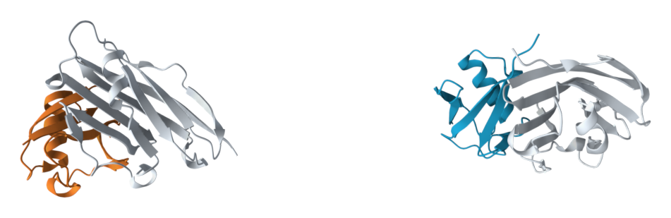

Target: human PD-L1 (115 observed residues, 5JDS). Two new 75-residue minibinders. No specified epitope. Seven stages completed on one A100; results downloaded and SHA256-verified before the pod was deleted.
One passes upstream filters; neither is a confirmed binder. Both have low interface confidence. A two-candidate smoke test verifies the software path, not a useful experimental hit rate.

Left/orange: candidate 0 (complex-recovery RMSD failure). Right/teal: candidate 1 (default filters pass). Gray: PD-L1. These are Boltz-2 predicted complexes; structures are separated for display.
| Candidate | Default filters | Complex recovery RMSD | Binder-alone RMSD | Boltz-2 interface ipTM | ESMFold2 ipSAE min |
|---|---|---|---|---|---|
| pdl1_0 | Fail | 2.61 Å | 0.83 Å | 0.293 | 0.040 |
| pdl1_1 | Pass | 1.12 Å | 1.78 Å | 0.305 | 0.054 |
The complex-recovery RMSD cutoff is 2.5 Å. Candidate 0 fails that filter at 2.61 Å. Candidate 1 passes all nine native filter flags. The current upstream protocol ranks on interface-related scores but does not impose a hard high-confidence interface threshold; passing its filters is therefore weaker than evidence of binding.
PD-L1 mmCIF + unconstrained YAML → BoltzGen backbone design → SolubleMPNN sequence redesign → Boltz-2 complex and binder-only predictions → ESMFold2 scoring → BoltzGen analysis/filtering.
| Stage | Result | Worker time (s) |
|---|---|---|
| design | Completed | 79.6 |
| inverse_folding | Completed | 10.9 |
| folding | Completed | 69.0 |
| design_folding | Completed | 55.1 |
| esmfold2_scoring | Completed | 116.2 |
| analysis | Completed | 19.0 |
| filtering | Completed | 14.0 |
These stage times exclude cold environment setup and earlier failed/retired attempts, whose logs are retained in the full archive.
pdl1_0 predicted complexMTIYVVKEDGTVITLEVEKSDTILDVKKKIEEKTGIPPSQQKLYYQGVELEDSKTLEDYNIKDKSVLSLKLVPAK
pdl1_1 predicted complexMKVFVELDNGEVIEVEVELSDTVGELKKKLGEKAGIPSERIVLIHHGKVLDGSLTLEENGVKENDVLKAIIAKEN
Summary JSON · All metrics and filter flags · Upstream PDF report · All outputs, intermediates, configs and logs · Model/runtime provenance · Cost and deletion record